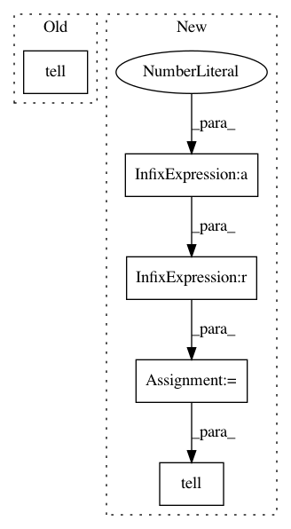

d1d7598ece5e8357ee515746b08437caaf8f77df,skopt/optimizer/base.py,,base_minimize,#,20
Before Change
if x0 and y0 is None:
for x in x0:
y = func(x)
curr_res = optimizer.tell(x, y)
if callbacks:
for c in callbacks:
c(curr_res)
After Change
// User suggested points at which to evaluate the objective first
if x0 and y0 is None:
for i, x in enumerate(x0):
fit_model = i == len(x0) - 1
y = func(x)
curr_res = optimizer.tell(x, y, fit_model=fit_model)
if callbacks:
for c in callbacks:
c(curr_res)
In pattern: SUPERPATTERN
Frequency: 3
Non-data size: 5
Instances
Project Name: scikit-optimize/scikit-optimize
Commit Name: d1d7598ece5e8357ee515746b08437caaf8f77df
Time: 2017-01-10
Author: betatim@gmail.com
File Name: skopt/optimizer/base.py
Class Name:
Method Name: base_minimize
Project Name: scikit-optimize/scikit-optimize
Commit Name: c011d35e0abb6a6f5f16f7137db84c799a3c3d93
Time: 2017-01-10
Author: betatim@gmail.com
File Name: skopt/optimizer/base.py
Class Name:
Method Name: base_minimize
Project Name: scikit-optimize/scikit-optimize
Commit Name: 544875dd8a7fea49a86e5623d37274159b4ba7b5
Time: 2017-01-10
Author: betatim@gmail.com
File Name: skopt/optimizer/base.py
Class Name:
Method Name: base_minimize